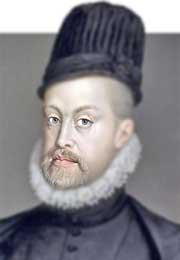

Ideas
Ideas Filosoficas de Felipe
 Felipe II fue un monarca que se identificó con las ideas iberistas y defendió
el catolicismo. Creía que la Corona debía salvar a la humanidad de la herejía.
Felipe II fue un monarca que se identificó con las ideas iberistas y defendió
el catolicismo. Creía que la Corona debía salvar a la humanidad de la herejía.
Ideas políticas:Consideraba que era obligación de la Corona salvar a la humanidad de la herejía.
Ideas económicas: Construyó una economía integrada entre sus dominios ultramarinos.
Ideas sobre el imperio :Creyó que su imperio era tan grande que "nunca se ponía el sol"
Ideas sobre el gobierno :Rechazó la idea de que el fin justifica los medios, pero en la práctica la aplicó.
Logros
Logros y contribuciones de Felipe
Felipe II de España (1556-1598) realizó importantes contribuciones y logros, entre ellos:
Construyó el primer imperio global; An anexó Portugal y sus colonias, creando el primer imperio planetario de la historia. Unificó políticamente España: Elevó la posición de España en el mundo artístico y cultural europeo. Construyó El Escorial; Este palacio real expuso a España al arte europeo y otorgó a los artistas españoles un lugar destacado. Creó un derecho uniforme; Construyó una economía integrada entre sus dominios ultramarinos. Realizó obras de ingeniería; Construyó obras de regadío, ingenios y máquinas para la industria, abastecimiento de agua y saneamiento de ciudades, caminos y puentes e ingeniería portuaria. Defendió la fe católica; Se autoproclamó protector de la Iglesia católica romana. Luchó contra el Imperio turco e Inglaterra: Luchó contra Francia, los Países Bajos, el Imperio turco e Inglaterra.
Bienes

Bienes Materiales de Felipe
 Entre los bienes materiales de Felipe II se encuentran sus colecciones de arte, sus libros, su armadura, su testamento y el Real Monasterio de El Escorial.
Entre los bienes materiales de Felipe II se encuentran sus colecciones de arte, sus libros, su armadura, su testamento y el Real Monasterio de El Escorial.
Colecciones de arte:Estatuas y bustos que se encontraban en la Real Academia de San Fernando
Armadura:Armadura de parada, que incluía una rodela, silla y testera Fabricada en acero pavonado, dorado y damasquinado, oro, latón y cuero
Libros:Desperta Ferro
Isabel Clara Eugenia "Favorita del rey, gobernadora de Flandes"
Lepanto, la historia oculta
Felipe II y el templo del Rey Salomón "La historia secreta de El Escorial"